The Mask Is Not the Model：前缀不变性审计精读
这篇论文由 Taebong Kim 等人完成，一作主机构为 VIDRAFT AI Research / QuantumOS，于 2026 年 8 月 24 日以 cs.LG 为主分类公开。论文把自回归因果性写成一个可执行的前缀不变式，用两次前向传播检查未来 token 是否改变了任一层的前缀表示，并把异常定位到首个超阈层。唯一论文入口为 arXiv:2608.22876。本轮未核验到独立官方代码仓库；论文所述 Hugging Face issue #47475 和 PR #47476 可访问，但它们是 Zamba2 缺陷报告与修复入口，不等于论文的完整复现包。
自回归模型的每个前缀表示都必须与未来 token 无关，但检查 attention mask 并不能覆盖扫描、归一化和混合 mixer 中的全部信息通路；更危险的是，静默泄漏可以让训练损失和验证困惑度看上去更好。
1. 背景和问题
1.1 因果性是整张计算图的属性
自回归语言模型的基本语义是：位置 t 的输出可以使用位置不晚于 t 的输入，但不能偷看任何未来位置。教师强制训练、perplexity 评估、逐 token 解码、KV-cache 复用和 speculative decoding 都把这条性质当成不言自明的前提。可是，今天的模型发布通常报告参数量、上下文长度、训练 token 和 benchmark，却很少附上“这个实现确实满足因果性”的可复查证据。这不是理论定义里的边角约束，而是决定所有自回归指标是否成立的结构性前提。
在纯 decoder-only Transformer 里，时间方向的主要混合操作是 self-attention，因此检查 causal mask 曾经是一种勉强可用的代理。但当代长序列模型会在一个 stack 内混合 local/sparse attention、线性递归、结构化 state-space scan、卷积、memory 和自定义归一化。mask 只约束某个 attention 算子，无法证明其他路径没有用全序列统计量，也无法证明 chunked recurrence 的索引和广播方向正确。所以论文标题中“mask 不是 model”的含义非常具体：因果性必须对整个前向计算函数验证，而不能对某个布尔 mask 属性做静态抽查。
论文的工程起点是作者内部 hybrid stack 连续遇到三种不同外观的因果错误：两个各自正确的 shift 叠加后多暴露一个未来 token；手写 attention 把因果邻域误写成对称邻域；differential-attention 在已经沿序列全局聚合之后才做差分。三者都违反同一语义，却需要不同的人工调试思路。这提示更好的审计单位不应是架构名称或代码模式，而应是一个与架构无关、从自回归定义直接导出的 metamorphic relation。
1.2 为什么静默泄漏会系统性误导评估
因果泄漏不像 shape mismatch 那样立即抛出异常。未来信息进入早期位置后，下一 token 任务会变得更容易，training loss 和 validation perplexity 甚至会显得更优。也就是说，这种 bug 会改善研发人员最信任的选模指标，却在 free-running generation、上线解码或 cache 路径里暴露。这种“指标向好、语义向坏”的非对称性，比一个显式 crash 更容易污染架构比较、checkpoint 筛选和复现结论。
作者的核心转换是把“代码里是否设了 causal mask”换成“当只修改未来 token 时，前缀的每一层表示是否完全不变”。这个问法同时适用于 attention、SSM、RNN、卷积和 hybrid mixer，并且有一个内生 oracle：如果模型真的自回归，两次计算在共享前缀上应执行同样的算术。问题也因此从“对某个实现的信心”变成“对可观测语义性质的证据”。
这种审计视角对 hybrid 模型尤其重要，因为模型名称不会告诉我们某一层实际调用了哪条代码路径。同一 checkpoint 在有无 fused kernel、CPU 与 GPU、full-sequence 与 cached decoding 下可能走不同实现；仅凭架构文档或一次短序列测试，不能把一条路径的结论复制到所有环境。因此论文真正审计的对象不是抽象模型品牌，而是“某个具体版本、具体装载环境和具体序列长度下实际执行的计算图”。这一粒度也是后文不把 Zamba2/Nemotron-H 代码缺陷泛化成模型整体失效的基础。
2. 方法
2.1 Prefix invariance 定义
论文首先把序列模型记为从长度为 T 的词表序列到逐位置表示的映射，并保留每一层的隐状态。这里不只把最后 logits 视为模型输出，而是把逐层表示也纳入被验证的可观测量，因为故障一旦经过后续层混合，只看末端就会丢失首次出现位置：
符号解释：$f$ 是被审计的整个模型，$\mathcal{V}$ 是 token 词表，$T$ 是序列长度，$d$ 是隐状态维度，$h_{\ell}(x)$ 是第 $\ell$ 层对输入 $x$ 的逐位置表示。这个定义故意不限定 mixer 类型；审计只需要能枚举层并取得层输出，不需要知道层内部是 attention score、scan state 还是 convolution feature。
Prefix invariance 要求任意两条序列只要在位置 t 之前完全一样，所有层在 t 的表示就必须相同。这一定义比“当前 attention score 没看未来”更强，因为它要求从输入到任一中间表示的整张计算图都尊守前缀语义，任何扫描、聚合或归一化都不能例外：
符号解释：$x,x'$ 是两条等长输入，$x_{[:t]}$ 是二者共享的前缀，t 是被检查的位置，$\ell$ 枚举每个模型层。关键是等式对每一层成立，因而泄漏一旦出现，它的最早层位置就是可观测的调试产物。这比仅在最终 logits 上问“有没有差”多了根因线索。
2.2 两次前向传播与首个异常层定位
最便宜的构造只改变最后一个 token。两条输入的前 T-1 个位置完全相同，仅末位不同。如果某个更早位置的层表示因此改变，差异只可能通过计算图中的时间反向通路传来，所以该构造不需要任务标签就拥有明确 oracle：
符号解释：$x^{(1)}$ 和 $x^{(2)}$ 分别送入两次前向传播，$T-1$ 是唯一被替换的未来位置。这个单 token 实例已足以触发任何实际传回前缀的依赖，而且它避免了随机重写大段 suffix 后难以说清泄漏半径的问题。末位扰动还让需要保持不变的区间恰好是一个连续前缀，便于统一实现。
在每个模型层上安装 forward hook 后，审计计算共享前缀中所有位置和隐维上的最大绝对差。选用 max 而非平均值的原因是，因果错误可能只先影响某个位置或某个隐维，若用平均就会被大量不变元素稀释；max 直接实现“任一前缀表示变化即违规”的定义：
符号解释：$\Delta_{\ell}$ 是第 $\ell$ 层的前缀差异，j 是隐状态维度索引，约束 $t
当所有层的 $\Delta_{\ell}$ 都计算完成后，首个超过阈值的层就是定位结果。后续层可能因残差连接或 mixer 继续传播差异，因此选最早层而不是 max-delta 最大层，才能把工程师导向最可能的代码起点：
符号解释：$\ell^{*}$ 是首个异常层，$\tau$ 是判定阈值。若集合为空，返回 CLEAN；否则返回 LEAK 和 $\ell^{*}$。这个 min 操作很重要：泄漏通常会继续传播到深层，但最浅的非零层才最接近错误代码起点，它把一个模型级告警转成了可操作的工程定位。
2.3 四个设计选择与正对照故障注入
四个设计选择共同保证差异可归因。第一，per-layer hook 保留定位信息，而 logits-only 只能告警。第二，比较区间排除末位，不把合法扰动计入泄漏。第三，审计时禁用 cache，使两次 forward 走完全一样的 full-sequence 图，避免把 cache/full 一致性这个另一性质混进来。第四，使用确定性单精度评估；在论文的 clean 检查点上，共享前缀执行 bitwise 相同计算，因此 $\Delta_{\ell}$ 是精确零，而不是一个需要事后拟合的小噪声带。
审计成本只有两次 forward，没有 backward、gradient graph、optimizer state、训练数据或标签；作者在 T=48 时的 135M 模型 CPU 审计报告约 0.1–0.5 秒。但“负结果便宜”不等于“负结果自动可信”：同一 loaded checkpoint 必须通过正对照，且序列长度必须超过自身 chunk、window 和 kernel 参数，否则检测器可能永远看不到错误路径。
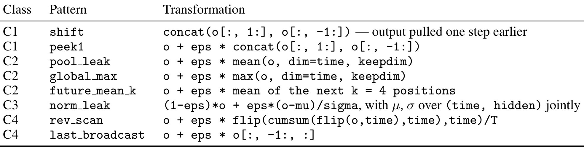
Table 12 把 positive control 的“故障”具体化为四类八种变换：C1 是 shift/peek 类的局部越界，C2 用全序列 mean、max 或未来窗口产生 aggregation leakage，C3 通过同时跨 time 和 hidden 的归一化注入全局统计，C4 用 reverse scan 或 last-token broadcast 表示方向性错误。它们都是对选定层输出 $o\in\mathbb{R}^{B\times T\times d}$ 人工施加的变换，目的是证明 hook 和定位逻辑活着，而不是宣称公开模型真有这些缺陷。一次标准 grid 在每个 checkpoint 的早、中、晚三个深度注入八种模式，所以每模型 24 次；后面的 192/192 正是这类可控实验单元。
对极弱信号，论文还把扰动幅度 $\varepsilon$ 与前缀差异的 log-log 响应写成一个判别思路。这一步不是核心审计的必需输入，而是当 delta 接近精度地板、单一阈值无法区分真依赖与稳定伪影时的二级诊断：
符号解释：$s$ 是 log-log 响应斜率，$\varepsilon$ 是施加到未来位置的扰动强度，$\Delta$ 是前缀最大差异。这个记号是对论文敏感性判据的显式概括：真实信息路径应随输入扰动增大而上升，数值地板则在不同 $\varepsilon$ 下基本保持水平，因而不应根据一个阈值附近的单点仓促下结论。
3. 实验结果
3.1 先分清 192/192 注入故障与真实缺陷
论文最容易被二次转述扭曲的数字是 192/192。它来自 8 个公开 checkpoint、8 种可执行 fault pattern 和 3 个注入深度的笛卡尔积，表示审计在全部 192 次人为注入中都把首个超阈层精确定位到注入层。它证明的是检测器在已知真值的 positive control 上有灵敏性和定位力，不表示作者从野外发现了 192 个真实模型漏洞。
真实 checkpoint 证据是另一条链：作者对 transformers 5.7.0 中的 chunked-scan 实现先做静态 census，预测 Zamba2 和 Nemotron-H 的 pure-PyTorch inter-chunk recurrence 会因约减轴向错误而违反因果性；再把审计长度提高到超过各自 chunk size，观测到泄漏在 256 和 128 边界后出现；最后用参考 Mamba2 轴向替换原计算，将差异降到精确零。这里的真实发现是一个共享代码线索在两个发布模型中实例化，不是两个独立抽样点更不是生态占比。
3.2 对比六类现有做法
基线对比在 SmolLM2-135M、Qwen3-0.6B、Pythia-1.4B 和 Mamba-130M 上共构造 96 次注入。B1 只比 logits，B2 静态查 mask，B3 打乱 suffix 后比 perplexity，B4 用三个 seed 重采样未来 token，B5 计算前缀输出对未来位置的梯度，B6 比较 cached 和 full-sequence 路径。这个实验并没有显示本方法是唯一能“看到”泄漏的方法，它要比的是检出、定位、成本和负结果的可解释性。
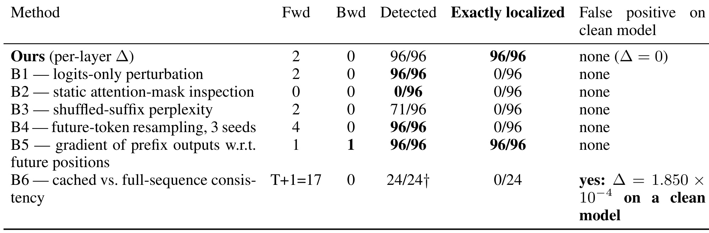
Table 1 给出了最重要的自我约束：Ours、B1 和 B4 都在 96/96 次中检出泄漏，所以不能声称该方法在二元 detection 上超越 logits-only 常规做法。真正的差异在 Exactly localized 列：本方法与梯度 B5 都是 96/96，而 B1、B3、B4、B6 都是 0/96 或 0/24。B5 的准确性与本方法相同，差异是它需要 backward、保留 activation graph，且受不可微操作、量化权重和自定义 kernel 的限制。B6 还在 clean SmolLM2 上产生 $1.850\times10^{-4}$ 的假阳性，说明 cache consistency 测量的是另一个值得检查但需另行校准的性质。
表中 B2 对 96 个注入故障检出 0，不是因为作者故意把错误藏在无 mask 模型里，而是八种故障都作用在层输出，mask 属性仍然正确。B3 的 71/96 则暴露了半径不匹配：局部 radius-1 泄漏只传到 cut-1，打乱 cut 以后的 suffix 时不会改变前半段 loss，这不是把阈值调小就能修好的问题。
3.3 负对照、灵敏度与短序列边界
作者先在四个 clean checkpoint 上同时检查 tensor equality、差异元素数、最大绝对差和 bit pattern，不是只说 $\Delta$ “很小”。这个负对照决定了阈值能否从一个模型专用经验常数变成稳定判据。
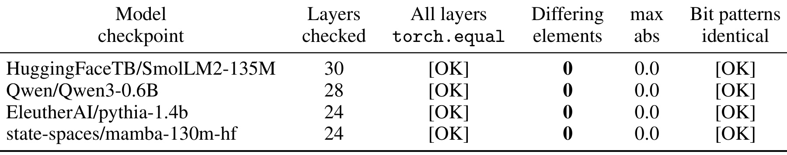
Table 2 显示 SmolLM2-135M、Qwen3-0.6B、Pythia-1.4B 和 Mamba-130M 的所有被检层都通过 tensor equality，差异元素数为 0，max abs 为 0.0，bit pattern 也相同。这支持在本文设定中把 CLEAN 看成精确不变，并解释了为什么 $\tau\in[10^{-6},10^{-3}]$ 不会改变这组结论。但这不是跨硬件、跨精度的普遍定理：如果 fused kernel 有非确定并行归约，或两次 forward 走了不同路径，clean 噪声带可能不再为零，此时必须重新标定。
公开 checkpoint census 则覆盖 attention、state-space、线性递归、递归-attention 和卷积-attention hybrid，其中 Mamba 和 RWKV 根本没有 attention mask 可检查。这证明两次 forward 的接口能跨 mixer 复用，但它也埋下了本文最重要的方法论失败：该 census 默认 T=48，比许多 chunk 和 window 都短。
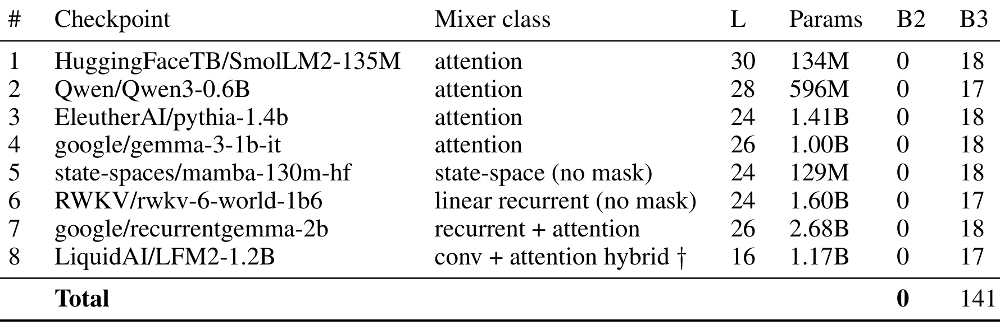
Table 4 的八个 checkpoint 都在短序列核心审计上给出 clean max=0，且各自 24 次注入定位通过；表中只展示了变量 B2/B3，其他共同值由文字说明。跨架构一致性支持“该方法可对不同 mixer 使用”，却不支持“这些发布模型在所有长度上都因果正确”。后续的 Zamba2 反例正好说明差别：当 T 小于内部 chunk 时，inter-chunk recurrence 退化成单 chunk，有问题的代码路径从未被执行，因而精确零也可以是覆盖不足的产物。
另一个“零不可自证”的例子是三个 Falcon-H1 checkpoint：它们在作者环境里对不同输入产生 bit-identical logits，连不同 token 的 embedding 差都只有 $3.78\times10^{-23}$，24 次正对照也是 0/24。因此它们不能被记为 clean，只能记为“当前 loaded state 无法审计”。这直接导出第一条发布规范：任何从“无信号”得出的 CLEAN，都必须伴随同一装载 checkpoint 的 live positive control。
3.4 真实 checkpoint 的边界泄漏与修复闭环
作者没有在运行大量模型后才挑出异常，而是先阅读 transformers 5.7.0 中六个 Mamba2-style chunked scan 实现。参考 Mamba2 先对 decay tensor 做 transpose，让乘积后沿 input-chunk 轴 j 约减；Zamba2 和 Nemotron-H 使用另一个 permute/求和组合，实际沿 output-chunk 轴 i 约减。因为 lower-triangular decay mask 的语义是 $j\le i$，约减轴一旦反了，当前 chunk 的 carry-in 就可能吸收本 chunk 或后续 chunk 的输入依赖。
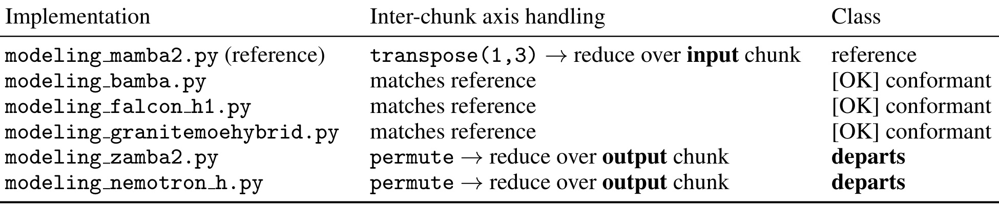
Table 7 显示六个实现中，mamba2 是参考，bamba、falcon_h1 和 granite-moehybrid 与参考一致，zamba2 与 nemotron_h 则都归入“reduce over output chunk”的偏离类。这个表的证据价值在于它在动态审计之前给出了可证伪预测：若轴向诊断正确，两个偏离实现应在第二个 chunk 开始时泄漏，而符合参考的实现应保持 clean。论文还报告 Zamba2 和 Nemotron-H 的三行问题代码块字节级相同，因而更合理的读法是“一个共享 code lineage 缺陷出现两次”，不是两个相互独立的生态缺陷。
动态阶段的关键修正是让测试长度超过模型自身参数。Zamba2-1.2B 的 chunk size 为 256，Nemotron-H-8B 为 128；Gemma 和 RecurrentGemma 则要超过 sliding window。如果仍固定 T=48，等于对最需要检查的 inter-chunk 路径零覆盖。
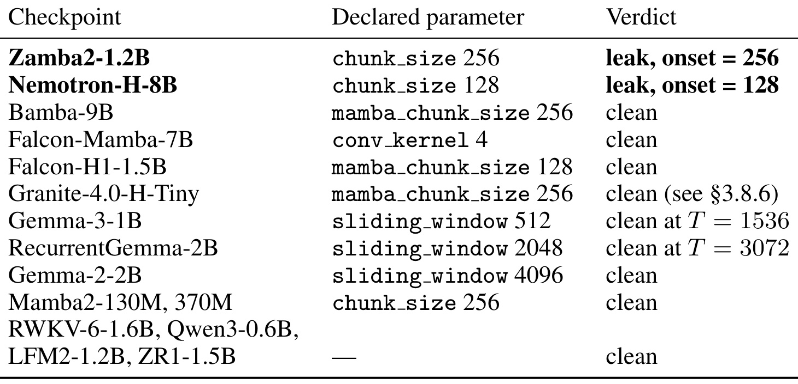
Table 8 的第一列是真实 checkpoint，第二列是必须被跨越的 chunk/window/kernel，第三列是动态 verdict。静态 census 标记的两个偏离实现确实分别在 onset=256 和 onset=128 泄漏，而 Bamba-9B、Falcon-Mamba-7B、Mamba2 等参考/一致路径保持 clean。这个表不能读成“模型名称为 clean 就永远没问题”：论文明确指出，某些发布 checkpoint 因层返回签名不接受当前 fault adapter，无法统一运行 positive-control gate，其 clean 只能算 provisional。证据最坚实的是代码层对照：参考 Mamba2 from-config 构造同时是 exact-zero clean 且能精确定位传播式注入故障。
边界 onset 让根因比“某个差异很大”更可识别。两个实现都会在 recurrence 之前 prepend 零 carry state，因此第一个 chunk 的 carry-in 是常数零，错误轴向无法污染它。到第二个 chunk，错误约减才让未来输入进入 carry state，所以首个异常位置与 chunk size 精确对齐。
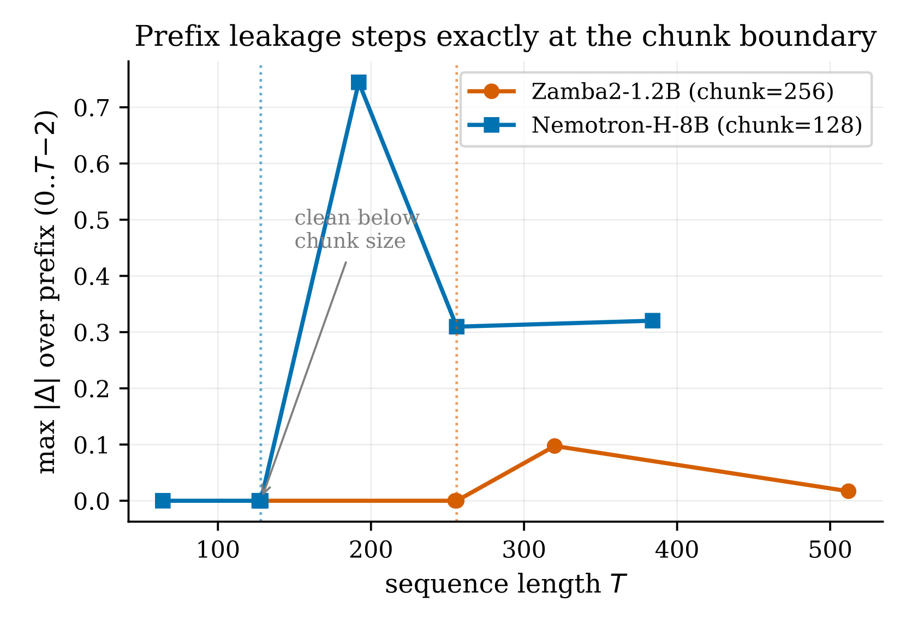
Figure 1 将这个阶跃性可视化。Nemotron-H 在一个 chunk 以内保持零，跨过 128 后前缀差异跳到约 0.7，随后在不同 T 上变为约 0.31–0.32；Zamba2 的转折点则是 256。幅度并不随 T 单调，因为末位扰动与 chunk grid 的对齐会改变未来信息传回前缀的程度；可重复的诊断键是 onset 出现在第一个 chunk 边界，而不是某个特定 $\Delta$ 数值。图中还提示了短序列的伪 clean 区：若审计只在边界左侧取点，无论阈值多严都不会看到缺陷。
对 Zamba2，作者还通过六类控制实验排除了替代解释：相同输入的两次 forward 仍是精确零，所以不是普通随机噪声；38/38 层各调用一次且没有共享模块，所以不是 hook 重入；四个 seed 重现；随机初始化 from-config 模型仍在 256 onset，所以不依赖特定权重；mamba_ssm 和 causal_conv1d 都未安装，所以不是自定义 kernel；长度扫描符合单 chunk 退化。
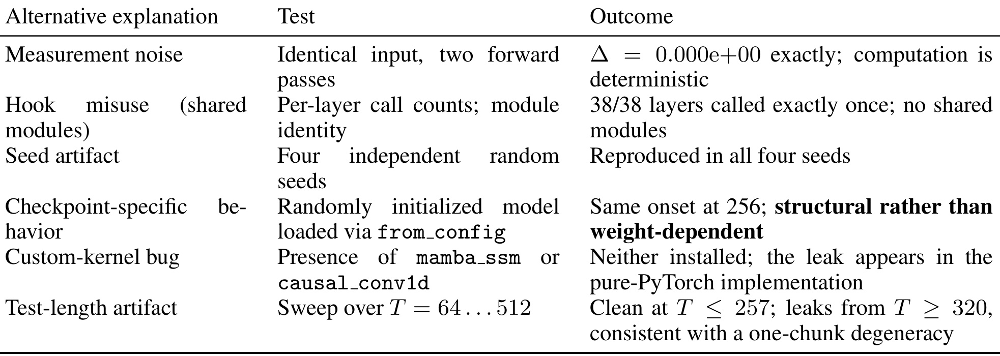
Table 9 的逻辑比“多跑几个 seed”更完整。Measurement-noise 对照回答计算是否确定，hook 对照回答层级记录是否失真，random model 回答缺陷是否属于代码结构，kernel 检查界定实际执行的是 pure-PyTorch 路径，长度扫描则检查缺陷是否与 chunk 路径启用一致。这些对照共同支持“可重复的结构性缺陷”，但仍不应外推为 Zamba2 权重、模型知识或所有部署路径整体失效。表里的 custom-kernel 行恰好说明归因边界：本文验证的是没有可选 fused package 时的参考 PyTorch 实现。
根因修复是将 Zamba2/Nemotron-H 的错误约减替换为 Mamba2 参考轴向。对 Zamba2 的相同输入，原实现的 max prefix delta 为 $1.12\times10^{-2}$，onset=256；修复后两者分别变为 0 和 None。
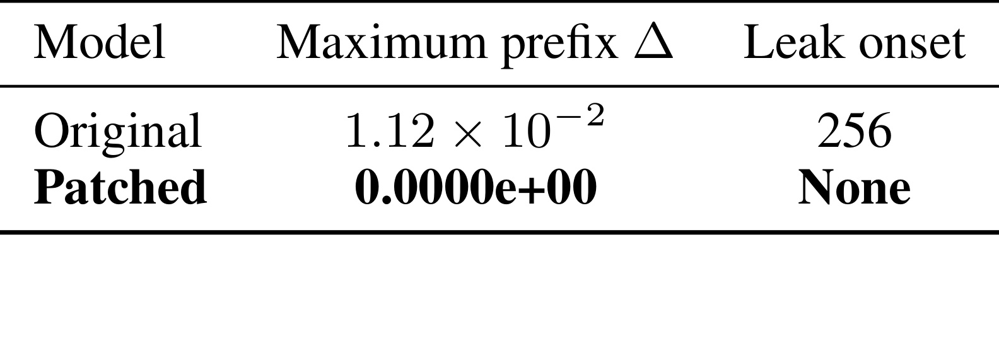
Table 10 的价值在于它是一个 sole-cause test：除了跨 chunk recurrence 的轴向处理外，输入条件不变，而前缀污染从可测的 $1.12\times10^{-2}$ 变成 exact zero，特征性 256 onset 也消失。这比只对代码做索引推导更强，因为它检验了“替换被怀疑路径是否足以消除现象”。同时，补丁并没有测量已发布权重的下游评分受污染的程度，也不能因此宣称修复会提升任务效果。它支持的是更狭也更可靠的结论：这个代码路径正是观测到的因果泄漏来源。
Nemotron-H 不是单纯从“它与 Zamba2 代码相同”推断有问题。论文在释放 checkpoint 上报告 T=192 和 T=384 的原始 delta 分别为 0.745 和 0.320，还有四个 seed 复现、loaded-checkpoint positive control 与第 17 层首次污染定位；应用同一修复后，两个长度都变为 exact zero。
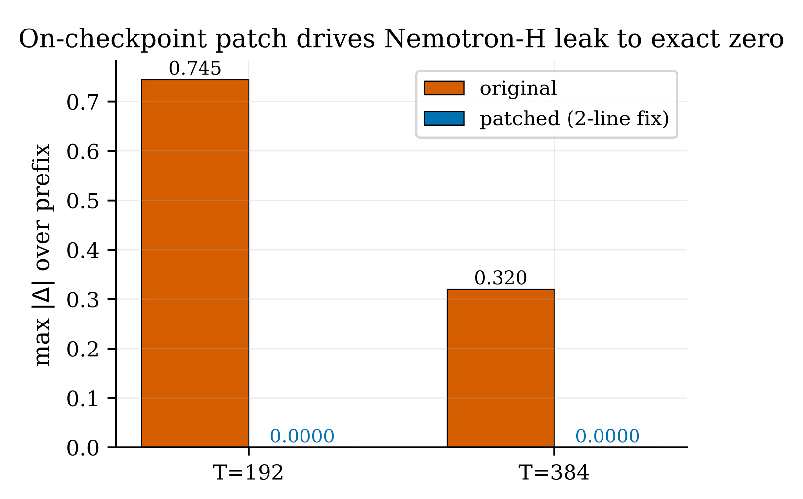
Figure 4 把 Nemotron-H 的 on-checkpoint 闭环单独画出：橙色原始路径在 T=192 时约为 0.745，T=384 时约为 0.320，蓝色修复路径在两个点都为 0.0000。这使 Nemotron-H 的证据不再只依赖共享代码 lineage，而是拥有自己的动态复现、审计生命性与 patch-to-zero。仍然需要守住边界：作者未对 Nemotron-H 重跑 Zamba2 的 random-weight from-config 和六类替代解释全表，且两者的 fused CUDA 路径均未测。因此合理结论是特定 pure-PyTorch chunked-scan 实现违反因果性，不是 Nemotron-H 作为整个模型“全面失效”。
3.5 如何排除数值噪声
作者在 Jamba-tiny 和 Granite-4.0-H-Tiny 上也看到过 $10^{-5}$ 量级的小非零 delta。如果只按“非零即泄漏”的方式报告，论文可以多声称两个发现；但作者设计了 perturbation-magnitude sweep，把未来位置的扰动从 $10^{-4}$ 扫到 1，看前缀响应是否跟着增大。
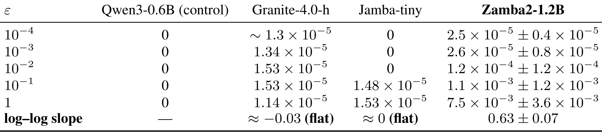
Table 11 显示 Qwen3 control 始终为 0；Granite 在全扫描区间约为 $1.1–1.5\times10^{-5}$，log-log slope 约 -0.03；Jamba 只在较大扰动时出现约 $1.5\times10^{-5}$ 的平坦地板，斜率近似 0。Zamba2 的两个最小扰动点也受地板限制，但从 $10^{-2}$ 到 1 的响应上升两个数量级，四个 seed 的平均 log-log slope 为 $0.63\pm0.07$。因此论文拒绝把 Jamba/Granite 记为泄漏，只保留随扰动增强而系统放大的 Zamba2 信号。这一处展示了比一味降低 $\tau$ 更稳妥的审计心态：阈值只切分单点，尺度响应则检查候选信号是否真的与未来扰动建立了可变的信息通路。
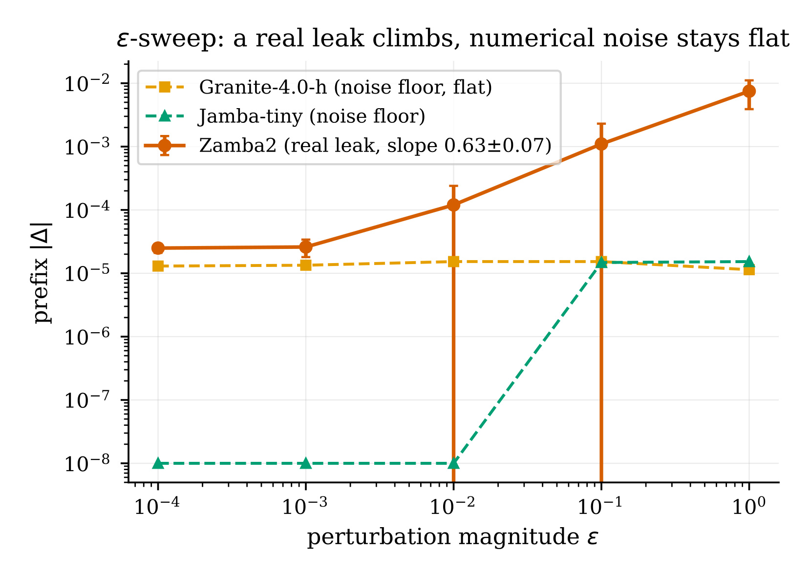
Figure 2 将同一判据放在双对数坐标上：橙色 Zamba2 曲线随 $\varepsilon$ 增大明显攀升，误差棒保留了四个 seed 的方差；Granite 与 Jamba 在 $10^{-5}$ 附近几乎水平。这张图也提醒读者，最小扰动区中 Zamba2 与数值地板近似，所以判别不应依赖两个局部点，而要看整段响应是否与输入扰动有尺度关系。Nemotron-H 的前缀差异可达 $10^{-1}$ 至 $10^{0}$ 量级，且在 chunk 边界阶跃，与这个噪声地板相差多个数量级，因而无需依赖额外的小信号斜率来成立。
灵敏度实验还给出了一个更细的边界：在常用 $\tau=10^{-6}$ 下，float32 的精确定位下限与注入深度相关；把阈值降到 $10^{-14}$ 可让某些信号多检出三到四个数量级，但 float32 在 $\varepsilon\le10^{-11}$ 时可因表示精度直接把注入层 delta 变成 0。此时检测可能在更深层放大后仍告警，却把起点定位晚一到数层。因此“检出”和“精确定位”有不同的数值下限，并且该下限需对具体模型测量，不能从单一 checkpoint 推广。
4. 总结
4.1 我的判断
这篇论文最有价值的不是算法复杂度，而是它把三个容易混在一起的问题分开了：模型是否泄漏、泄漏首次出现在哪一层、一个 CLEAN 结果是否有资格被解读。两次 forward 本身只回答前两个；作者从自己的失败中补上 positive-control gate 和 architecture-aware length gate，才让第三个问题有了答案。对模型发布和 CI，最实用的产物应不是一个 CLEAN 字样，而是带有每层 max delta、精度、阈值、序列长度相对内部参数、同 checkpoint 正对照结果和实际执行路径的 certificate。
对推荐/搜索系统，该思路可以直接迁移到有严格时间切分的 sequential user modeling、会话排序、自回归生成式推荐和线上 feature pipeline：只改变未来交互，然后比较切点之前每个模块的表示或打分是否不变。但迁移时必须先界定哪些时间信息在业务上合法，否则会把允许的全局上下文当成泄漏。对 LLM 工程，则应把 full-sequence、cache、quantized kernel、fused kernel 和 distributed/sharded 路径分开出具证书，因为一条路径的 clean 不能自动覆盖另一条实现。
4.2 局限与后续跟进
局限至少有以下六点：
- Zamba2 和 Nemotron-H 是一个字节级相同的 code-lineage 缺陷在两个发布模型中的实例，它们证明“现实中会发生”，不能用来估计生态的缺陷率。
- 本文在 detection 上没有超过 logits-only B1/B4，在 localization 准确性上也没有超过梯度 B5；优势是两次无梯度 forward 的成本和适用性。
- 真实缺陷结论绑定 transformers 5.7.0 中没有安装可选 fused package 时的 pure-PyTorch 路径；fused CUDA 实现未测，不能泛化成模型所有执行路径都有同样问题。
- 大约二十个 checkpoint 的 census 是为架构多样性挑选的非随机样本，且若干 GPU-only custom-kernel 模型根本无法在当前环境装载，存在明显覆盖偏差。
- 测试仍主要覆盖 evaluation mode、单 batch 和有限 seed；只在特定 batch shape、training stochasticity、分布式分片或稀有输入上出现的 data-dependent leakage 没有被覆盖。
- 精确定位下限与模型和精度相关；LFM2-1.2B 在 $\varepsilon=1$ 的 24 次定位全通过，却在 $\varepsilon\le10^{-1}$ 扫描里稳定晚报三层，作者尚无机制解释。
后续跟进至少有四条：
- 跟踪 issue #47475 和 PR #47476 的 merge/发布版本，并对修复前后 transformers 版本做同输入回归，确认参考 PyTorch 路径在现实安装环境中真正切换。
- 在可编译 mamba_ssm/causal_conv1d 的 GPU 环境里对 Zamba2 和 Nemotron-H 复制 chunk-exceeding 审计，将 fused fast path 从未测变成独立证据。
- 为当前无法注入故障的架构编写层返回签名 adapter，让 Table 8 中每个 provisional clean checkpoint 都能通过同一 loaded artifact 的 positive-control gate。
- 把审计扩展为参数网格：序列长度跨越每个 chunk/window/kernel，同时扫描 batch shape、精度、cache/full、训练/评估和 distributed path，从“一次检查”升级为可比较的发布证书。
总的来说，prefix invariance 把因果性从实现惯例变成可运行的语义契约。这项工作的说服力不来自“192/192”一个醒目比例，而来自它同时展示了检测器的能力、失败方式和自我修正。将 positive control、架构参数导向的长度覆盖和执行路径标识纳入发布规范，比再多一次只看 mask 的代码 review 更接近真正的因果正确性证明。